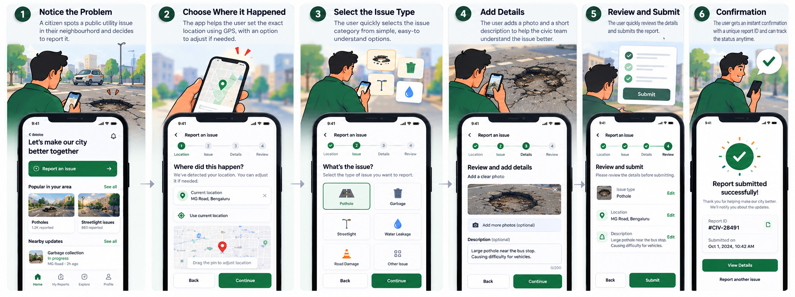
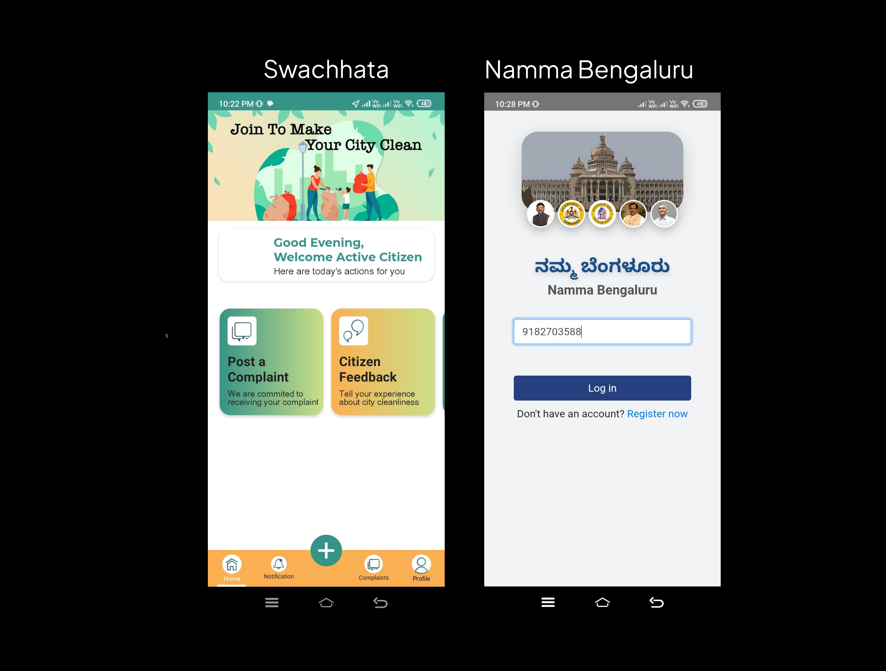
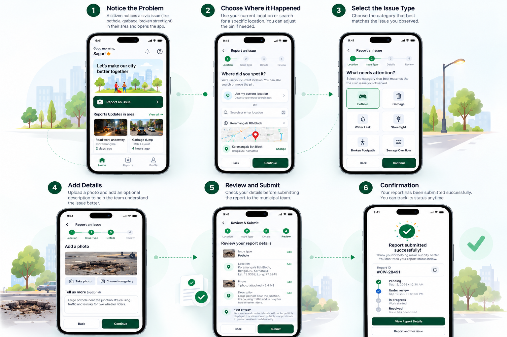

Frictionless Civic Complaint
A simpler, safer and more transparent way to report civic issues — removing administrative complexity from the citizen and moving it into the system.

Challenge
High abandonment & citizen distrust in legacy municipal complaint reporting
Filing civic grievances in legacy municipal portals required navigating convoluted department hierarchies, deciphering administrative jargon, and filling out 14+ mandatory text fields just to report a hazardous pothole or broken streetlight. Citizens were expected to know their municipal ward number and jurisdictional boundaries before even submitting an issue.
Due to a complete lack of tracking transparency and no automated verification, citizens experienced an unaccountable "black box" where complaints languished without acknowledgement. This resulted in an alarming 82% abandonment rate during online reporting and pervasive civic disengagement across the municipality.
Field interviews revealed that when public infrastructure repairs went undocumented, citizens turned to social media out of frustration, placing unnecessary reputational strain on municipal authorities while leaving grassroots issues unresolved on the ground.
Solution
A frictionless 4-step mobile flow with automated municipal grid routing
Designed a progressive-disclosure 4-step mobile flow (Report → Pin Location → Capture Details → Instant Submit) that shifts administrative complexity from the citizen to the underlying system. Instead of forcing manual ward selection, the interface leverages GPS auto-detection and reverse-geocoding to pinpoint exact municipal boundaries automatically.
To streamline issue intake, the system provides visual category cards (Roads, Waste, Water, Streetlights) and smart image compression for photo uploads, allowing citizens to capture and submit verifiable evidence directly from the street in under 45 seconds.
Every submission triggers an automated municipal dispatch ticket linked to the jurisdictional ward engineer, generating live milestone alerts (Assigned → In Progress → Resolved with Proof Photo) via SMS and an in-app tracking dashboard, establishing closed-loop accountability.
Results
83% reduction in reporting time & +68% surge in verified submissions
Average issue submission time was slashed from 4.5 minutes down to just 45 seconds. This elimination of cognitive friction drove a +68% increase in completed civic submissions across pilot wards, with over 74% of users filing reports on their first visit without customer assistance.
Automated GPS grid routing eradicated misrouted tickets entirely, eliminating 100% of manual department triage overhead and accelerating average municipal repair assignment from 3.2 days down to less than 4 hours.
Overview

Citizens encounter civic issues every day — potholes, garbage dumping, broken streetlights, water leaks and damaged footpaths. Reporting them, however, can feel like completing a government form rather than performing a simple civic action.
This project redesigns the civic reporting experience around a single principle: ask the citizen only what they know, and let the system handle the administrative complexity. The result is a reporting flow that takes seconds, a tracking model that separates submission from verification, and a public layer that shows civic progress without exposing the people who reported it.
The Challenge
Citizens need a simple way to report issues such as potholes, garbage, water leaks, and broken streetlights. My focus was to design a flow where users can clearly and quickly:
The problem I focused on: Users should always know where to start, what to do next, and what happens after submitting.
What I Observed
From the existing apps I reviewed, I observed a consistent set of friction points that appear before a citizen ever reaches the actual complaint flow.

| Observation | User problem | Opportunity |
|---|---|---|
| Too many options | "Where do I start?" | Strong primary CTA |
| No progress indicator | "What comes next?" | Stepper |
| Unclear post-submission | "What happens now?" | Tracking |
Design Direction
Instead of building a long complaint form, I broke the experience into small, understandable steps.

Guide
Make the next action obvious.
Simplify
Ask only for essential information.
Use the system
Use location and visual inputs wherever possible.
Build confidence
Show users what they're submitting.
Keep them informed
Continue the experience after submission.
Wireframes
Low-fidelity wireframes exploring the structure and layout before moving to high-fidelity screens.


Story-driven approach: Each wireframe set maps to a stage — Home & Location, Issue Type & Details, and Review & Success — keeping the journey predictable.

Core Flow
The full journey — from opening the app to resolution.

Location → What happened → Evidence → Confirmation → Tracking. The issue exists at a physical location, so location comes first. Then the citizen describes what happened and provides evidence. Review builds confidence before submission, and tracking continues the experience after.
Key Design Decisions
Expand each decision to understand the reasoning behind the design.
Why? The issue exists at a physical location, so I wanted the system to handle location detection instead of making users manually explain where they are.
Design decision: Current location + change/search location.
Why? I wanted users to always know where they are, what they've completed, and what's next.
Design decision: Location → Issue → Details → Review
Why? Cards make issue types easier to scan, while icons help users recognize them quickly.
Why? A photo can communicate the problem clearly, while not every user may be comfortable writing a detailed description.
Design decision: Photo = important · Description = optional
Why? I wanted users to see exactly what they were going to submit and correct anything before sending the report.
Design decision: Issue + Location + Photo + Description + Edit
Why? Some users may hesitate to report an issue if they're concerned about being identified.
Design decision: Provide privacy reassurance at the point where the user is about to submit.
Why? The experience shouldn't end after submission. Users may want to know: Was it verified? Has work started? Is it completed?
Tracking states:
Final Screens
High-fidelity UI — the polished experience ready for handoff.
.png)
.png)
.png)
.png)
.png)
.png)
Product Architecture
The product is structured into four core modules.
Reporting Module
- • Location
- • Issue Type
- • Details
- • Review
- • Submit
Tracking Module
- • Report ID
- • Status
- • Timeline
- • Resolution
Community Module
- • Area reports
- • Nearby issues
- • Duplicate awareness
Support Module
- • Help
- • Privacy
- • FAQs
MVP vs Future
A clear split between what ships now and what's planned for later.
MVP
- • Location
- • Issue categories
- • Photo upload
- • Optional description
- • Review screen
- • Report ID
- • Status tracking
Future
- • AI issue detection from photo
- • AI-generated description
- • Duplicate detection
- • Smart categorization
- • Automatic department routing
- • Predictive resolution updates
- • Advanced notifications
Why no AI in MVP? "I wanted to validate the core reporting experience first instead of adding AI just because it was possible."
Assumptions & Trade-offs
- • Users allow location access.
- • Photos can provide useful evidence.
- • Reports may require verification.
- • Multiple users may report the same issue.
- Photo vs description → Photo prioritized, writing optional.
- AI vs simplicity → AI moved to future.
- More information vs cognitive load → Only essential info shown during reporting.
Success Metrics
These are proposed success metrics, not measured results.
Completion
- • Report completion rate
- • Drop-off by step
Efficiency
- • Time to submit
- • Bounce-back / error rate
Engagement
- • Report tracking usage
- • Return visits
Product Health
- • Duplicate reports
- • Usage by area
Prototype
Reflection
Frictionless Civic Complaint
Report simply. Track transparently. Protect citizens.
Report → Verify → Assign → Resolve
Designed by Sagar Shivaji
Back to Portfolio